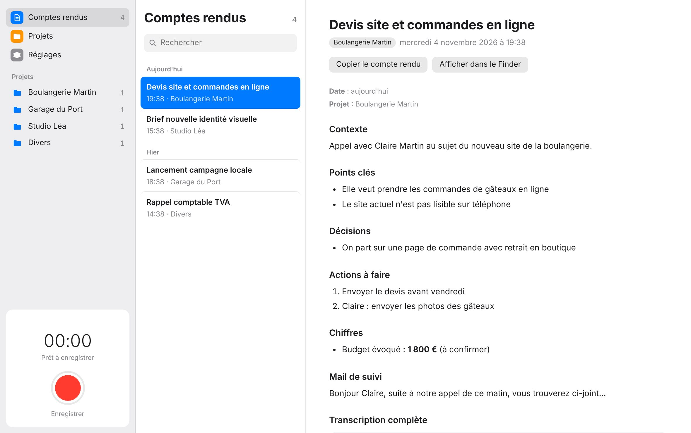
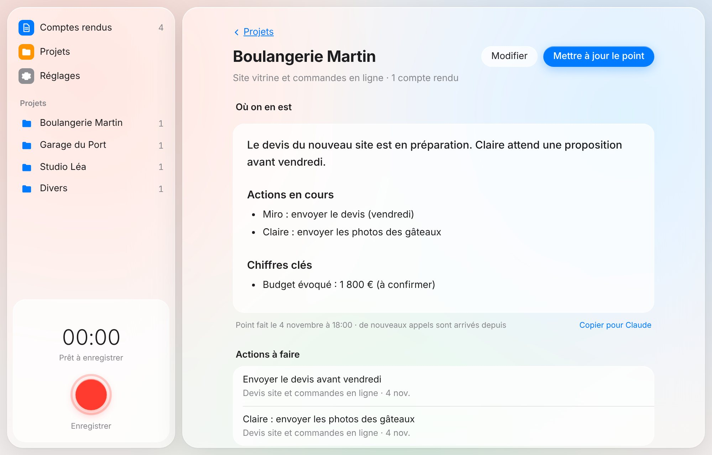
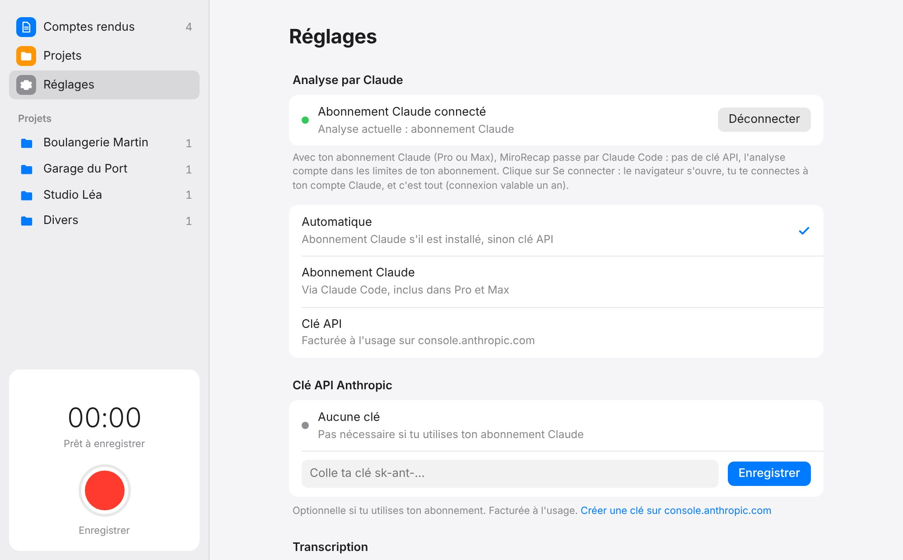

Tes appels, résumés et rangés.
MiroRecap enregistre tes appels et tes rendez-vous sur ton Mac. Claude en tire un compte rendu clair, rangé dans le bon projet.
Gratuit · Mac avec puce Apple · macOS 13.5 ou plus récent

Tu parles. MiroRecap s'occupe du reste.
Plus besoin de prendre des notes pendant un appel. Tout se fait tout seul, pendant que tu passes à la suite.
Tu enregistres
D'un clic dans la barre des menus ou depuis l'app. En visio, ta voix et celle de tes interlocuteurs sont captées. Ou avec le Dictaphone de ton iPhone.
Ton Mac transcrit
Whisper transforme l'audio en texte directement sur ton Mac, sans internet.
Claude résume
Il rédige le compte rendu : décisions, actions, chiffres et mail de suivi.
C'est rangé
Le compte rendu arrive dans le bon projet, et une notification te prévient.
Un compte rendu prêt à envoyer.
Chaque appel donne un document clair, que tu peux relire en trente secondes. Un clic sur « Copier pour Claude » te donne un contexte compact à coller dans une conversation Claude.
- Le contexte et les points clés
- Les décisions prises
- Qui fait quoi, et pour quand
- Les budgets, prix et délais évoqués
- Un mail de suivi déjà rédigé
- Un bloc de contexte prêt pour Claude
Chaque projet, son point d'étape.
Claude range chaque appel dans le bon projet. Sur la page d'un projet, un clic sur « Où on en est ? » et Claude relit tous les appels pour faire le point : décisions, actions en cours, chiffres, prochaines étapes.
- Toutes les actions à faire, regroupées
- Un appel mal rangé ? Change-le de projet en un clic

Ton abonnement Claude, en un clic.
Tu as Claude Pro ou Max ? Clique sur Se connecter, valide dans ton navigateur, et c'est tout : pas de clé API ni de frais en plus. Sans abonnement, une clé API fonctionne aussi.

L'audio ne quitte pas ton Mac.
Transcription en local
Whisper tourne sur la puce de ton Mac. Seul le texte part chez Claude pour rédiger le compte rendu.
Tes fichiers chez toi
Comptes rendus et enregistrements sont rangés dans ton iCloud Drive, consultables depuis l'app Fichiers de l'iPhone.
Code ouvert
Le code de MiroRecap est public : chacun peut vérifier ce que fait l'app.
Installé en deux minutes.
Rien d'autre à installer : tout est inclus dans l'app.
- Ouvre MiroRecap.dmgLe fichier est dans tes Téléchargements.
- Glisse MiroRecap dans Applications
- Ouvre l'appLa première fois, macOS demande une confirmation : Réglages Système → Confidentialité et sécurité → Ouvrir quand même.
- Connecte ton compte ClaudeDans les Réglages de MiroRecap, clique sur Se connecter.
Questions fréquentes
Il me faut quel Mac ?
Un Mac avec puce Apple (M1, M2, M3, M4…) sous macOS 13.5 ou plus récent. Les Mac Intel ne sont pas compatibles, car la transcription utilise la puce Apple.
C'est vraiment gratuit ?
L'app est gratuite. Pour les comptes rendus, il faut un abonnement Claude Pro ou Max (sans frais en plus), ou une clé API Anthropic facturée à l'usage.
Pourquoi macOS bloque l'app la première fois ?
MiroRecap est une app indépendante, sans la signature payante d'Apple. macOS te demande donc de confirmer une seule fois, dans Réglages Système → Confidentialité et sécurité.
Ça marche avec mon iPhone ?
Oui. Enregistre un appel ou un mémo, puis partage-le dans iCloud Drive → Comptes-rendus → _A-traiter. Ton Mac s'en charge dès qu'il est allumé.
J'ai le droit d'enregistrer un appel ?
En France, enregistrer quelqu'un sans le prévenir est interdit. Préviens toujours ton interlocuteur avant de lancer l'enregistrement.